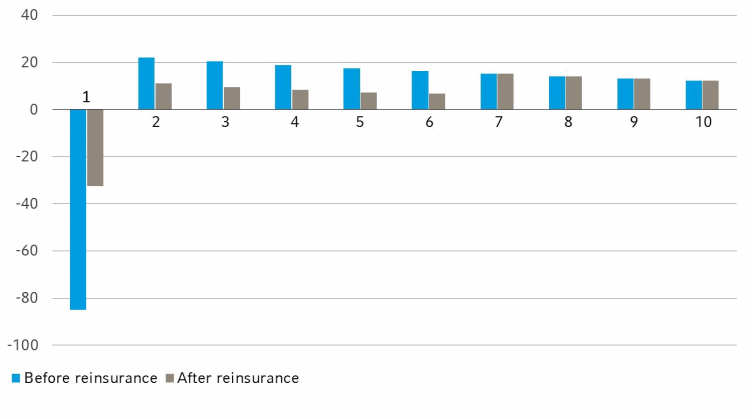

Management Reporting¶
Management Reporting
This note will largely focus on Embedded Value given its prevalence in the industry. However, other metrics unique to the life insurance industry will also be touched on at the end.
Embedded Value¶
Given the long-term nature of life insurance policies where profits emerge over the policy term, traditional financial accounting principles failed to accurately represent their profitability.
This resulted in a low valuation of insurance companies and thus a series of unwanted acquisitions in the 1980s. To combat this, Embedded Value (EV) was developed to estimate the long-term profitability of a life insurance policy and thus provide a more accurate view of the company value from a shareholder's perspective.
EV is thus a measure of the Shareholder Value of a life insurance company:
EV is often voluntarily disclosed by the company, which can be used for a variety of purposes:
- Internal: Stock price justification, Incentive compensation
- External: Mergers & Acquisitions, Comparative Analysis
Type of EV¶
The methodology of EV has evolved over time, resulting in three distinct methodologies. Although there is no central governing entity on how it is reported, the industry has adopted the guidelines outlined in:
- Traditional Embedded Value (TEV): Association of British Insurers (2001)
- European Embedded Value (EEV): CFO Forum (2004)
- Market Consistent Embedded Value (MCEV): CFO Forum (2008)
TBC to provide high level differences between the types.
This note will largely focus on TEV - but the key concepts are largely transferrable to the other approaches.
Adjusted Net Worth¶
The first component is known as the Adjusted Net Worth (ANW) of the company. It is the Net Asset Value of the company, based on the book values of the components. However, some adjustments are typically made to it to reflect the true economic value of the company:
Note
The book value of the components are often aligned to the latest published financial report.

From an accounting perspective, net assets represent the shareholder's stake in the company. However, most solvency regulations require the company to hold additional capital on top of their reserve, known as the Required Capital (RC).
The required capital is still owned by the shareholders but is not distributable as it is necessary by regulation for the company to operate. The remaining distributable portion of net assets is known as the Free Surplus (FS).

Cost of Capital¶
Although the required capital is owned by shareholders, it is locked into the company and cannot be immediately used for other purposes. When locked in this way, the capital generates less value to shareholders than it otherwise would have:
- Shareholders expect to earn the RDR on their capital
- However, since it is locked into the company, it can only earn an investment return based on the assets that it can be invested in
- Furthemore, since the investment income is earned by the company, it is subject to tax
Note
In most regulations, required capital must be held in low risk assets which thus generate low returns.
Thus, the above differences creates an opportunity cost for shareholders, known as the Cost of Capital that is reduced from the value of RC:
Value in Force¶
The other component is known as the Value In Force (VIF), which is the present value of future profits from the in-force block of business.
Profits in a company can either be reinvested back into the business or distributed to shareholders via dividends. VIF assumes that future profits are entirely distributed to shareholders, thus is counted towards EV.
Risk Discount Rate¶
Shareholders took on risk to invest in the company. Thus, they require a rate of return higher than the risk free rate (RFR) to reflect the underlying risk of the company. It is commonly referred to as the Risk Discount Rate (RDR).
The RDR will be used as the basis for discounting as it represents the minimum return that the shareholder expects.
In most jurisdictions, Debt cannot be used to support capital requirements. Thus, the RDR is determined using the Cost of Equity, which is usually determined via the Capital Asset Pricing Model (CAPM) or its variants:
Note
If Debt is allowed in some capacity, then the Weighted Average Cost of Capital (WACC) can be used instead:
Future Profits¶
An implicit assumption made is that there are future profits that will emerge over the life of the policy.
Note
This applies to both positive and negative profits. It simply means that the profits will not remain at zero throughout the life of the policy.
To understand why profits will emerge, consider the expression for profit:
If reserves are calculated on the same basis as the projection, then there will be NO profit as the terms will cancel each other out:
- Release of reserves to cover the expected** net benefit and expenses; offsetting the net premiums received in the period
- Increase in reserves due to the unwinding** of discount; offsetting the investment income earned on the same amount
Note
Unwinding is the reversal of discounting. Consider the following:
- The discount rate is 10%
- There is a cashflow of $121 in two years time
- The present value of this cashflow today is $100
In exactly one year, the present value of the cashflow will be $110. The present value increases because there is one less year of discounting (all else equal). The increase in present value over time is known as the Unwinding for that period.
However, most regulations require reserves to be calculated on a more conservative basis to ensure that the reserves are sufficient even if actual experience deviates significantly from expected:
- BE rates are loaded with risk margins (PAD)
- Cashflows are discounted at the RFR; reserves expected to earn ABL rate
Thus, a difference in basis between the projection and reserve will cause profit to emerge from the policy:
- Change of reserves will be different the expected benefits and expenses (net of premiums)
- Unwinding of reserves will be less than the expected investment income
EV is calculated on a best-estimate basis while reserves are calculated on a conservative basis, resulting in emerging profits.
In practice, companies must also pay corporate tax on their profits. Thus, Profits After Tax should be considered instead:
Note
This is another reason why profits will not be zero - taxes are usually not accounted for in the reserve.
Shareholder Profits¶
Based on the above components, EV can be expressed as the following:
Rather than calculating the last three components seperately, it can be calculated directly by considering the Profits to Shareholders:
The key is to understand that similar to PAD, the RC is not needed to support the policy benefits. Thus, it will gradually be released over the life of the policy. The value of the RC is thus captured via the PV(Change in RC) component.
Since it is released over time, the RC is also expected to grow:
- Expected to grow by the RDR but only earns the post-tax ABC
- Grows by the post-tax ABC but discounted by the higher RDR
- PV of the RC decreases below its original value - difference is the Cost of Capital
Thus, the CoC can be quantified in a different manner as the difference in the two profits:
Par Products¶
Due to the unique properties of the participating fund, EV is calculated in a different manner:
- There is no CoC (VIF = PVFP)
- ANW is replaced by Estate
- Profits are recognized differently
Specific details on par fund management can be found in its respective set of notes. For this section, it is sufficient to understand the following:
- Par Fund assets are strictly ring-fenced from the rest of the company
- Net assets of the fund is known as the Surplus of the fund from which bonuses are paid
- An additional amount up to 1/9th of the bonus declared can be transferred to shareholders into a Surplus Account within the par fund
Transfer + Res prof Transfer is the yearly trasfers based on current bonus rate However, the current bonus rate may not fully exhaust the profit > Will have some spare profit > Residual Profit
No coC because assumed that it is self sustaining, shareholders do not need to set up capital for it Link to NB strain
Analysis of Movement¶
The most important aspect of EV is not the value at any particular time, but rather how it changes from one period to another (usually one year). The process of breaking down the changes in EV into different Attributions is known as the Analysis of Movement (AoM):
The AoM is often more important than the actual EV itself, as it provides actionable management information:
- Identifies key drivers of value
- Identifies areas for assumption review
There are many ways of decomposing the movement that may be unique to each company's business profile. This section aims to cover the main attributions that will be part of every AoM:
| ANW | PV(Profits) | PV(CoC) | EV | |
|---|---|---|---|---|
| Opening | \(A\) | \(B\) | \(C\) | \(A+B+C\) |
| Attribution 1 | ||||
| Attribution 2 | ||||
| ... | ||||
| Ending | \(X\) | \(Y\) | \(Z\) | \(X+Y+Z\) |
Note
The impact to PV(Profits) and PV(CoC) is straightforward as they are directly calculated in the projection. For ANW, consider its definition:
Assuming that there
Stepwise Approach¶
There are two methods to attribute the movements:
- Independent: Changes made in isolation; model resets after each component
- Stepwise: Changes made incrementally; model does not reset
Generally, the stepwise approach is better as it accounts for interdependencies, allowing for the correlation among components to be reflected.
Starting from the previous result, only one component is added on at a time incrementally to determine the impact of that component, till the final result is reached. If the attribution from one step to another is large, external analysis performed outside the model to further explain the impact.
Different sequencing of components will lead to a slightly different attribution for each component as it affects where the correlation impacts are parked under - overall movement remains unchanged. Thus, a sequence that is operationally easier to execute is often chosen.
Model Changes¶
Over the year, the model used for projection will naturally be updated with new methodologies or to correct errors, naturally leading to some small variation in results.
Similarly, assumptions would have been reviewed and updated based on the latest experience, resulting in some impact to the results, all else equal. It is usually broken down into several minor steps for each type of assumption changed:
- Mortality, Morbidity & Lapse
- Commission & Expense
- Investment Return on assets/funds
- Discount Rate
- Risk Free Rate & Exchange Rate
Expected Return from Existing Policies¶
When moving from one year to another, there are a few items we expect to change.
Firstly, is the transfer of profits. Based on the opening position, the company expected to earn some profit in the first year of projection. Now that the year has passed, the company expects to realize these profits and thus they should no longer be classified under PV(Profits) but instead transferred to ANW.
Note
This is a reclassification from "future earning" (PVFP) to "earned" (ANW). The impact on both should be equal and opposite, resulting in no change to total EV.
Secondly, is the unwinding of the interest. Moving one year into the future, we expect our assets and liabilities to grow:
| Assets | Liabilities |
|---|---|
| Earn one year of interest | Discounted one year less |
| Roll-forward using BEIR | Roll-forward using RDR |
| ANW | PV(Profits) & PV(CoC) |
Warning
An easy way to quantify this impact is to take the difference between:
- Opening Projection (t=0)
- Opening Projection (t=12)
However, the first component contains the first year cashflows as well. Thus, that should be removed to ensure that the difference contains the impact purely due to the unwinding AND to ensure that there is no double counting with the transfer of profit.
Expected Return from New Business¶
New Business written over the year becomes part of the in-force block and is thus under the scope of EV. The EV generated from the block of new business is known as the Value New Business (VNB).
Details about how VNB is computed can be found under its respective section. For the purposes of AoM, it is sufficient to know that regardless of when the business was written in the year, it is commonly treated as being just incepted on the valuation date (Duration In Force = 0).
An implication of this is that the entire EV of the business is parked under PV(Profits), when it should not be:
- Upon inception, the entire policy EV is captured under the PV(Profits) and PV(CoC)
- After one month, one month's worth of profits should be transferred from PV(Profits) to ANW
- Similarly, there is unwinding of the monthly earned interest and discount rate
Note
For instance, consider a policy incepted in September. At the end of the year, the policy should have:
- 3 months of expected profits earned in ANW
- 9 months of future profits in PV(Profits) and PV(CoC)
- 3 months of unwinding
Notice that this is the same process as what was done for the existing in-force block, just at a monthly level rather than yearly.
At this point, all the expected changes in EV have been covered. Thus, the remaining change represents unexpected changes that require further investigation.
Experience Variance¶
The most common approach taken to explain the difference is to compare actual experience with expected. This attribution is often referred to as Experience Variance.
Due to the sheer number of assumptions made in the model, only a few critical assumptions are analyzed. Among them, they are typically broken down into the following components to provide greater insight:
| Economic | Non Economic |
|---|---|
| Out of management control | Within management control |
| Little can be done | Action can be taken |
| EG. Risk Free Rate | EG. Expense |
For non-decrement related assumptions (EG. Expense or Investment Income), the variance can be determined as:
This variance is attributed entirely to ANW becuase it is concerning cashflows that have already occurred.
However, for decrement assumptions (EG. Lapse and Mortality), there are two effects:
- Current Year: Paying more death benefit than expected
- Future Years: Fewer policies in-force in future years (Impact to Reserves & Future Profits)
The current year effect is determined in the same way as the non-decrement assumptions - comparing what was actually paid against what was expected.
The future year effect is complicated because it is hard to isolate the effect that multiple
Multiple decrement, hard to isolate the effect from just lapse/death
Capital Movements¶
Any changes in capital over the year will affect EV:
- Dividends: Paid using free surplus; reduces ANW accordingly
- Capital Injections: Added into required capital; increases VIF accordingly
Unexplained Movement¶
Any remaining amount of EV movement that is not captured by the above attributions is referred to as the unexplained movement.
It is expected that there will be some degree of unexplained movements as not all variances can be captured. That said, the unexplained movement should only form a small proportion of overall movement.
HOWEVER, investment return on Assets backing liabilities DO NOT COUNT TOWARDS SHAREHOLDER VALUE this is because the investment return on this item is expected to support the policyholder onligation (sINCE BEL is discounted liabilities, expected earning rate is already accounted)
Value New Business¶
No real reason to model NBEV correctly because there is no incentive to do so since the total VIF remains the same
Operating Profit¶
Annual Premium Equivalent¶
Annual Premium Equivalent (APE) is used a measure of sales for a block of policies, typically used as a measure of new business sales.
Due to the different types of premium modes available (Regular, Limited & Single), the magnitude of the premium cannot be taken at face value. Thus, APE aims to standardize each premium to an equivalent regular premium amount so that they can be aggregated together.
It assumes that a standard life insurance policy has a 10 year premium term - Single and regular premiums are thus scaled linearly to match this 10 year term:
Info
10% is often directly used in the formula for single premiums since it is fixed that they will only pay one year of premiums - which will always result in a 10% scaling.
The above scaling is not perfect - it does not account for the difference in time value of money. However, the difference is often negligible and outweighed by the simplicity of the linear approach.
APE is the preferred method of measuring of sales as it takes into account both the:
- Size of policies
- Mix of policies between RP, LP & SP
New Business Strain¶
Life Insurance policies typically incur a negative profit in the first year it is sold, known as the New Business Strain (NBS). This is due to the premium in the first year being insufficient to cover the high upfront costs of setting up a policy:
- Selling Expenses
- Establishing Reserves and Required Capital
It is typically expressed as a percentage of the premium received:
From an accounting perspective, writing new business immediately reduces the solvency of the company as the shortfall is funded from shareholder capital. However, profits will be recovered over time:

NBS is important because all companies strive to write more business - thus, it is important to minimize the strain created so that new business can be written more efficiently, without severely impacting solvency.
Payback Period¶
The Payback Period is the time taken for the policy to breakeven; recover its NBS. It is a measure of how fast profit from the policy will emerge.
It is deter